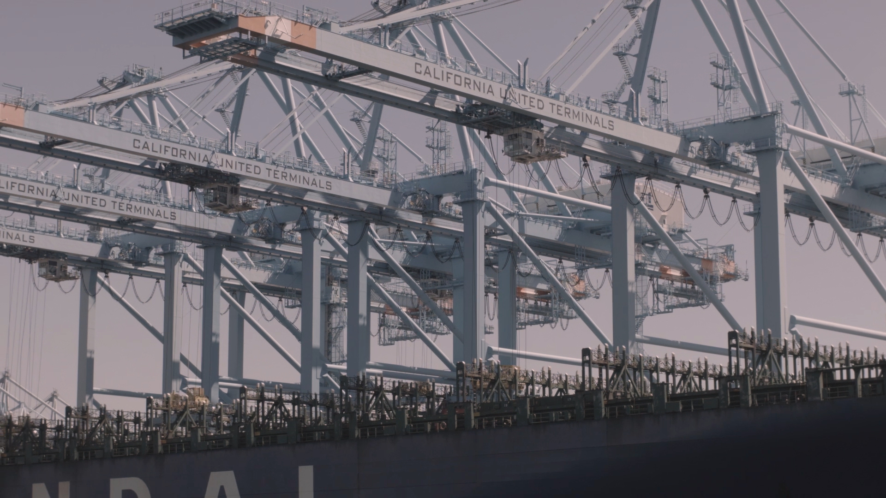
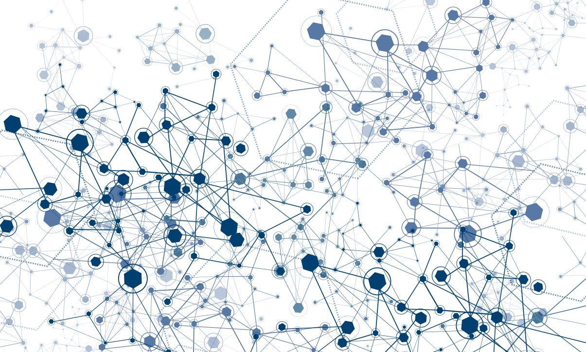

The function of a union has consistently been one of guaranteeing economic income and stability to its members in the face of uncertainty. In order to secure economic income in coming automation and not be pushed out, unions will have to adapt and start thinking long term in order to compete. This strategic roadmap formulates such a long term strategy for truck unions generally and the russian trucker union, the OPR OPR - is a newly formed russian union of truck drivers specifically.
Union As Platform
 Los Angeles port infrastructure
The first step of our strategy is one of consolidation. Most truck markets worldwide are composed of a majority of independent truck drivers, operating as single entities. In these markets, which we refer to as possible implementation markets (see more in call for change) not only are most drivers not bound to logistical companies; they also own their own trucks. Through driver consolidation a wide spectrum of organisational forms and possibilities to leverage this majority open up.
 russian road at it best
russian road at it best
Union consolidation through new tools
We see Unions as in the best position to become these new entities of leverage. To further solidify its means of communication and making its processes as transparent as possible new tools have to be put in place. With the ubiquity of mobile devices among drivers, a creation of an integrated multifunctional specific app would be best way to do this.
*images of app*Together with the OPR we are developing their first mobile application that will fulfill the basic needs of its members. The first version of the app focuses on community building, fee collection, governance and security. Functions include channel and peer to peer voice communication, payment system, alarm button, news and voting systems.
1.2 Union as digital platform
With an app in place that acts as a representation of the functions of the union the next step is to extend the existing functionality, attract new members to the union and build culture within the existing user base. Important here is to realize the network effects that could be internalized and add to the already existing repertoire of collective bargaining and strike power. Capturing of internal activity and data that is turned into a collective asset.
Road IntersectionFor the OPR the next development Drawing upon content generated by its users. Map system for rest stops, restaurant and repair.
New network effects
Important goals for the app in the future: This app would be tailored made for the specificity of different contexts. Mainly it will integrate voting functions, cartography with services specifically for truck drivers (rest stops, restaurants, gas stations, weighing stations, places for praying, location of other members are and much more), a financial transaction mechanism, a communication device and most importantly a means to collect data of the logistical transactions done by drivers (time, cargo, route, etc). heavy network effects, and through the embedding of new services.
Governance models
Their model of governance would probably have to modify, or create new entities inside a larger scope. The specific model of governance for each union should be chosen by its members. Experimentation with new organizational structures supporting the fluidity and spontaneity of temporary work. The specific model of governance of each union should be chosen by its members. We can provide certain examples of diverses case, but in the end the structure would be chosen by them. External entity that develops this platform?
Data collection
In the Russian context the OPR have the capability to not only leverage the trucker network with strikes and collective bargaining, but have the possibility to create and own substantial data sets that will be crucial for the coming automation of trucks.
This last part is a key point in the progressive development of the strategy. It will help lay the foundation for the next step, where a mass bundling of data and information of flows of goods and commodities will help shape a new logistical company under distributed ownership amongst the union members.
If they don’t proceed with the next step, by already creating a stronger network and collecting massive amounts of data, they are already in a more robust position to deal with the contingencies to come.
Unions as freight company
App expansion
70% of the market, other competition. Protocol for transactions. If the first step is one of consolidation, this next one is of expansion. The previous strategic position an introspective reshuffling of an organization. This next one builds upon the preceding and is simultaneously a base for the one to come.
By having bundled massive amounts of data of logistical flows, the union could begin to think about establishing its own freight company. Providing services of transport directly between client and driver, without brokers, having a direct impact on driver earnings. Creating set prices up front, that is one of the major concerns of truck drivers. By doing all transactions digitally the union can manage to lock in deals and not have financial problems of payment delay,etc.
Collective bundling
Currently the logistics market is extremely disorganized, a centralized platform for truck shipments would greatly improve the efficiencies of the market in terms of empty truckloads.
Risk mitigation
Inherent in this massive operation new mechanisms would surface that could have a profound positive impact on truck drivers such as: financial loans at lower rates to help repair their truck, upgrade them, invest in different aspects, benefits for the whole organization, etc.
Flow optimization through decentralization
The structure of this new entity would operate in more decentralized way in comparison to other logistical companies. It would cover the vast territorial landscape with distributed nodes that could easily book jobs without a central geographical location. Creating a superior optimized system that would allow for efficient movement of commodities and goods through a decentralized network. Inherent in this massive operation new mechanisms would surface that could have a profound positive impact on truck drivers such as: financial loans at lower rates to help repair their truck, upgrade them, invest in different aspects, benefits for the whole organization, etc. Uber ref Critical mass would already be reached with the size of the union.
Bottom up / top down correlation
If done correctly this would create a spread network of workers, that would be at the same time owners. Preserving a position of control of their means of production. The union would operate as a fusion between syndicate and company. The difference lies in the composition of the governance system and the redistribution of its income. Simultaneously working bottom up and top down. By having each member continue to do his regular job and having a centralized entity helping organize the operation, the procedure of data collection and the maintenance of the structural aspects of the organization as a whole
Automation Through Retrofitting
Dash cams & other input sources
Comma referenceComma reference Reference legal situation in russia, possibility for the OPR as most truck drivers already use dashcam. Reference legal situation in russia, possibility for the OPR as most truck drivers already use dashcam. Direct applications are slam mapping for location and driving material for training neural nets.
Digital vs mechanical retrofitting
direct cost efficiencies. The main aspect is to achieve a truck retrofitting what the fuck is retroffiting that could relieve the driver from his main task at his own will. Trucks that were manufactured after 2008 (???) have the ability to be retrofitted. After 2008 most vehicles operate on the basis of a mainframe computer that handles most of the activity electronically. Retrofitting entails to rewire the components through hardware and software to have the vehicle become autonomous. The hardware is based mostly on diverse sensorial apparatus, cameras and sonar devices to allow the vehicle to locate itself in relation to its physical environment. Software is currently being developed to command the vehicle in diverse situation in relation to what the different sensors are capturing.
One of the most difficult parts of vehicle automation is how to prepare the vehicle to react towards other vehicles, predicting behavioral patterns of others in relation to it. Truck automation is relatively easier than car automation because it is easier to predict how other vehicle will behave towards trucks. Also, because trucks mostly operate on highways and in the periphery of cities, the degree of uncertainty of other units is further reduced.  arb can't write text in here
With retrofitting an array of possibilities emerge. Once the technology will be developeds further a set of communication tools of v2v (vehicle to vehicle) will be established where situations as platooning will be quite common.
3.4 Regulatory hurdles
Safety and environmental regulations,
3.4 Infrastructure
3.5 Distributed sensory apparatus
Using trucks as a distributed sensory system united through a new network – the union – is able to assemble a massive number of drivers dispersed across Russia to constantly scan and inform on the condition of road infrastructure and surroundings.